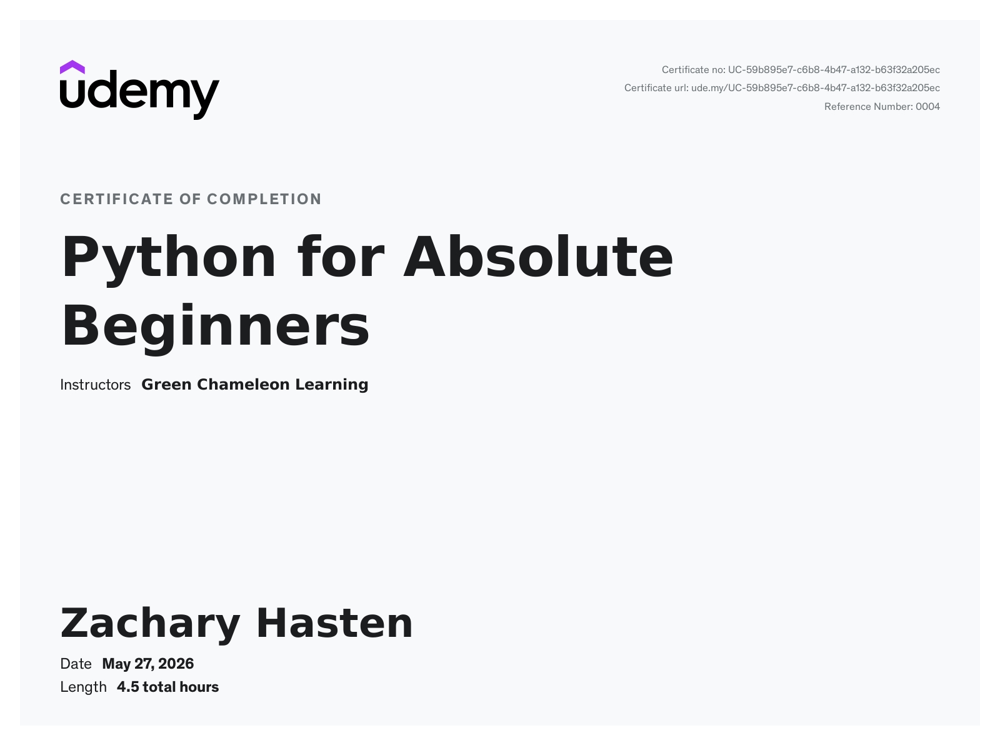

How I Started Learning to Code
Posted on June 02, 2024
The first time I ever opened a code editor, I had no idea what I was looking at. I just knew I wanted to make a game, and C# sounded like the magic key. I picked C# because that’s what Unity used, so in my mind it made sense: learn the language, make the game.
My routine back then was pretty simple. I’d open Unity, watch a few YouTube tutorials, and then immediately try to create something on my own. I even bought a Udemy course where you build a few small games. One of them was a little rocket‑boost game I named “To the Moon! Maybe?” and honestly, I was extremely proud of myself for finishing it.
But here’s the problem: even after finishing the course, I still had no idea how to actually code anything on my own. I could follow instructions, sure, but starting from scratch? No clue. And trying to learn Unity and programming at the same time was just overwhelming. Eventually, I quit.
A few months would pass, and I’d come back. Same pattern every time: get excited, open Unity, follow a tutorial, get overwhelmed, quit. Rinse and repeat. I must’ve done that cycle more times than I want to admit.
This went on until my wife, Miracle, brought it up again. She knew how badly I wanted to learn programming and how much I wanted to eventually work in the field. She also knew I kept getting in my own way.
One of the biggest things holding me back was AI. I kept telling myself that learning to code was pointless because AI was going to take over everything anyway. I didn’t want to “waste my time” learning something that might not matter.
But people kept reminding me that no matter how good AI gets, it’s never going to replace the human soul behind the work. And honestly, that stuck with me.
So I finally decided it was time to stop messing around and actually do what I’ve always wanted to do: learn to code for real.
When my wife and I started learning together, I immediately tried to jump straight into the hard stuff again. Luckily, she already knew my routine and called me out on it. She ended up doing some amazing research on what beginners should actually learn first so we wouldn’t get overwhelmed. We found a Udemy course called “Pre‑Programming: Everything You Need to Know Before You Code” by Evan Kimbrell. It was a great introduction to the basics we should understand before diving into real programming. It got a little political at times, which was weird, but overall it was worth our time.
After that, we bought another Udemy course called “Python for Absolute Beginners” by Green Chameleon Learning. It throws a lot of information at you really fast, but it still helped us get our feet wet.
The course we’re enjoying the most right now is 100 Days of Code™: The Complete Python Pro Bootcamp by Dr. Angela Yu. We were told it might be tough without any experience, but taking that absolute beginner course beforehand really helped. As of this post, my wife and I just finished Day 4, and so far we’ve completed every project Dr. Angela has thrown at us. Day 1 was a Band Name Generator, Day 2 was a Tip Calculator, Day 3 was a text‑based Treasure Island game (which was surprisingly fun), and Day 4 was a Rock, Paper, Scissors program. My biggest issue is that I tend to overcomplicate my code and make it longer than it needs to be. You can check out all the programs I’ve created here. I plan on keeping them exactly as they were when I wrote them because I think it’s important to show my progress. I want people to understand that just because you don’t know how to code now doesn’t mean you can’t learn. The more you practice, the better you’ll get.
Around the same time, my wife and I also started learning HTML, CSS, and JavaScript. There’s a site called freecodecamp.org that offers a full‑stack software engineer course, and we’ve been taking that alongside Python. Since I’m learning HTML, CSS, and eventually JavaScript, I decided to build my own blog from the ground up and honestly, I’ve loved every minute of it.
Looking back, I’m honestly glad I went through all those false starts. Every time I quit and came back, I learned a little more about what I was doing wrong and what I actually needed to focus on. This time around feels different. I’m not trying to skip ahead or rush into building a full game on day one. I’m taking my time, learning the basics, and actually enjoying the process instead of fighting it.
Learning alongside my wife has made a huge difference too. We keep each other motivated, we celebrate the small wins, and we push through the frustrating parts together. It’s been fun in a way that learning never was for me before.
So that’s how I finally got here, building this blog, learning Python, working through courses, and actually sticking with it. I’m still at the beginning of my journey, but for the first time, I feel like I’m moving in the right direction. And if you’re reading this because you’re thinking about learning to code too, just know this: you don’t have to get it right the first time. You just have to keep going.
I’ll be sharing everything I learn along the way. The wins, the mistakes, the projects, and whatever else comes out of this adventure. If nothing else, I hope my progress shows that anyone can learn to code if they’re willing to start slow, stay consistent, and not give up on themselves.
The Pre‑Programming course isn’t something you absolutely need before learning to code, but it does cover a lot of concepts that make the early stages way less confusing. It leans a little heavy on front‑end topics in some sections, but honestly, that’s not a bad thing. Even if you plan on becoming a back‑end developer, having a basic understanding of how the front‑end works makes everything click together a lot easier. For me, it was a solid warm‑up before diving into the real coding stuff.

The next course we took was “Python for Absolute Beginners” by Green Chameleon Learning. This one moves pretty fast, so you really have to pay attention and take notes. The instructor likes to circle back to concepts he taught in earlier videos, and a lot of the coding exercises build on things you might not fully remember at first. If you’re just starting out, don’t get discouraged if it doesn’t all click right away or if you can’t figure out how to put the code together on your own yet. That’s normal. It takes time for your brain to start thinking like a programmer, and the more you practice, the more everything starts to make sense.
